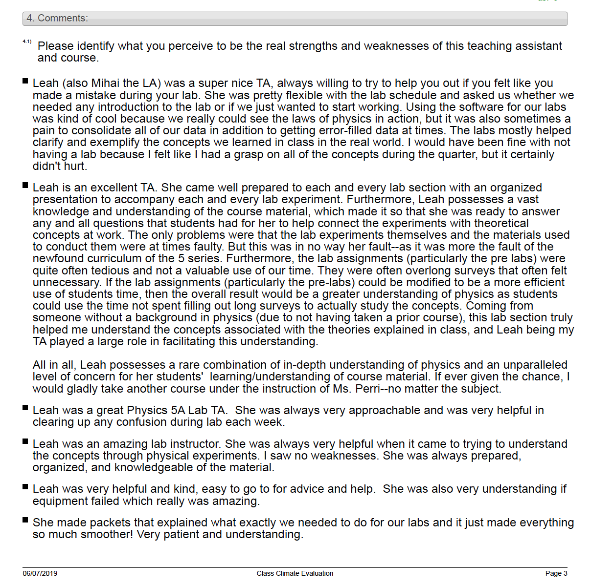

From Physics to Software Engineering
I am a trained physicist and software engineer passionate about demystifying the mysteries of the natural world and building software that has tangible impact on society. As a physicist, I have worked with a lot of experimental data. Every dataset has a story to tell if you know how to speak its langauge. My training in physics has shaped my ability to think logically, strategically and innovatively. I graduated with a BA in physics & astronomy in 2017 from Northwestern University. At Northwestern, I worked on computational research studying gravitational-wave astronomy. I went on to earn an MS in physics from UCLA in 2018, where I studied particle physics and participated in the Compact Muon Solenoid experiment at CERN. Check out my recent work to learn more about these projects.
Recent Work

Compact Muon Solenoid Experiment
As a PhD student, my focus is in experimental particle physics. I currently work on the Compact Muon Solenoid (CMS) experiment located at CERN. I analyze large datasets using Python software that I develop in order to extract meaningful conclusions from the data. My analysis generally follows the following pattern: retrieving and cleaning the data, writing appropriate software (including algorithm development), analyzing the data using the software and then, finally, generating visual representations, such as plots, to support my findings (along with statistics). Most recently, I have been involved in developing a software package that will be used in a detector upgrade scheduled to take place in about a year from now.
Gravitational waves emanating from two black holes merging into one
Funded by various NASA scholarships, I worked with the Parameter Estimation LIGO group on gravitational-wave astronomy research at Northwestern. I learned how to code in Python, how to navigate the command line, as well as the basics of high performance computing and Bayesian statistical methods. After gaining experience through participating in various small projects, I took the lead on a study proposed by my advisor. The Parameter Estimation LIGO group uses statistical methods to estimate parameters (physical properties, such as mass) of compact binary objects. One such type of object is the binary neutron star/black hole merger (merger means that the objects are spiraling toward each other due to the mutual gravitational pull). The aim of my study was to determine whether or not it is beneficial (in terms of how well we can perform parameter estimation) to have information about the location in the sky of one of these mergers. The study was published in The Astrophysical Journal and served as my senior thesis, allowing me to graduate with departmental honors. While participating in the International Research Experience for Undergraduates in Glasgow, Scotland, I constructed a machine that is used to profile fused silica fibers that are responsible for stabilizing mirrors inside the LIGO detectors. This work involved hands-on experimental physics experience including LabVIEW programming, soldering and circuit-building, as well as data acquisition and analysis. Our work was published in Classical and Quantum Gravity.

During my first year of graduate school I taught undergraduate labs and discussion sections. I taught roughly 40 students per section and most quarters I had 2-3 sections per week. I became very passionate about teaching and my instructor evaluations confirmed that I was successful in preparing and mentoring my students. I was honored when the professor of the course I was teaching asked me to cover one of his upcoming lectures. I preferred teaching students pursuing majors other than physics because I found the process of engendering excitement about physics to be more rewarding than presenting material to students who already have an affinity for the subject. I attribute my success as a teacher to my ability to break down a very technical topic for those who require a more conceptual understanding. A video teaching sample is available upon request.